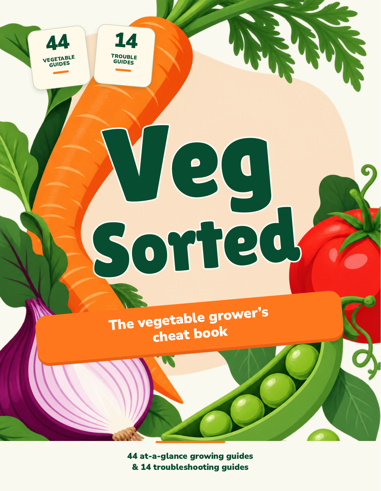
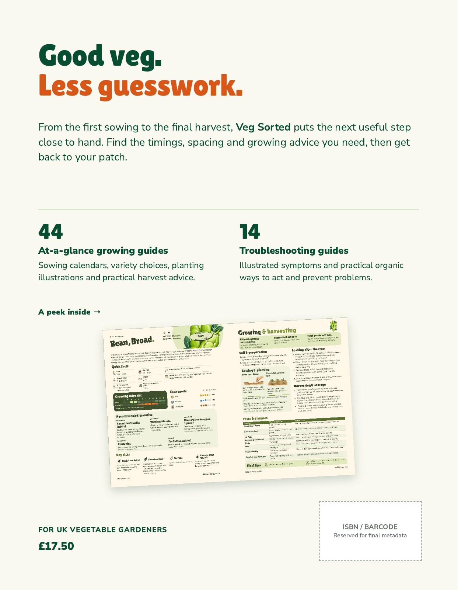

Veg Sorted
The vegetable grower’s cheat book
Two adaptations of approved Cover C.
185 × 240 mm paperback · Bookvault
Working cover price £17.50 · REJECTED
Both proposals rejected by John on 7 October 2026. Historical evidence only. See the fresh sketches for The Vegetable Guru.
C1 · Original character
Green title, orange subtitle ribbon and the familiar count badges. A warm cream back carries the guide preview.




Shown at trim size using renders of the actual PDFs. The PDFs include 3 mm bleed. Click a cover to inspect it larger. Both backs use the same proposed copy, existing Broad Bean spread and price, so the colour treatments can be compared directly. Fronts and backs can also be mixed.
Compare with the approved original Cover C

What carries forward
The carrot, cut purple onion, red tomato and pea pod; cream and apricot ground; bold green lettering; orange ribbon; angled layout; guide counts and the “peek inside” idea.
Changes proposed
- The baked-in lettering is replaced with editable title and subtitle type.
- The art is a built-in imagegen derivative of Cover C. Hidden areas were reconstructed and proportions adapted; the carrot now curves more. This is recognisable source-based artwork, not a pixel-identical extraction.
- Page previews move to the back. The old A4 sheets are replaced by an existing compact Broad Bean spread.
- The old “Practical advice. At a glance.” footer is replaced with John’s exact confirmed cover line.
- C1 keeps both badges. C2 uses the counts on the back and the full line on the front.
- The new back copy, price placement and barcode reservation are proposals. Author and imprint are omitted pending confirmation.
Thumbnail comparison

Design review, not final production artwork. The illustration is approximately 146 ppi at this size; a higher-resolution reconstruction is still required. Text is embedded vector type. Final stock, pagination, spine, colour preparation and metadata will determine the Bookvault wrap. No spine width has been assumed. Original A4 covers and book interiors were not changed.